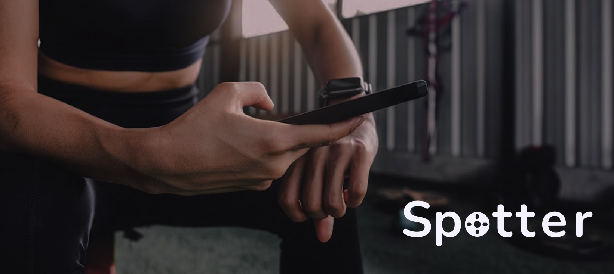
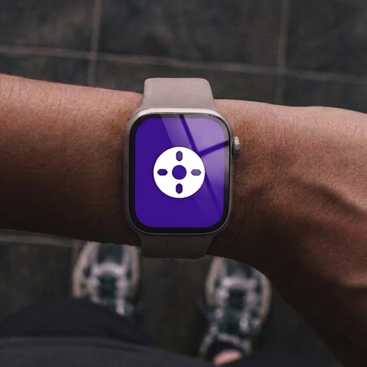
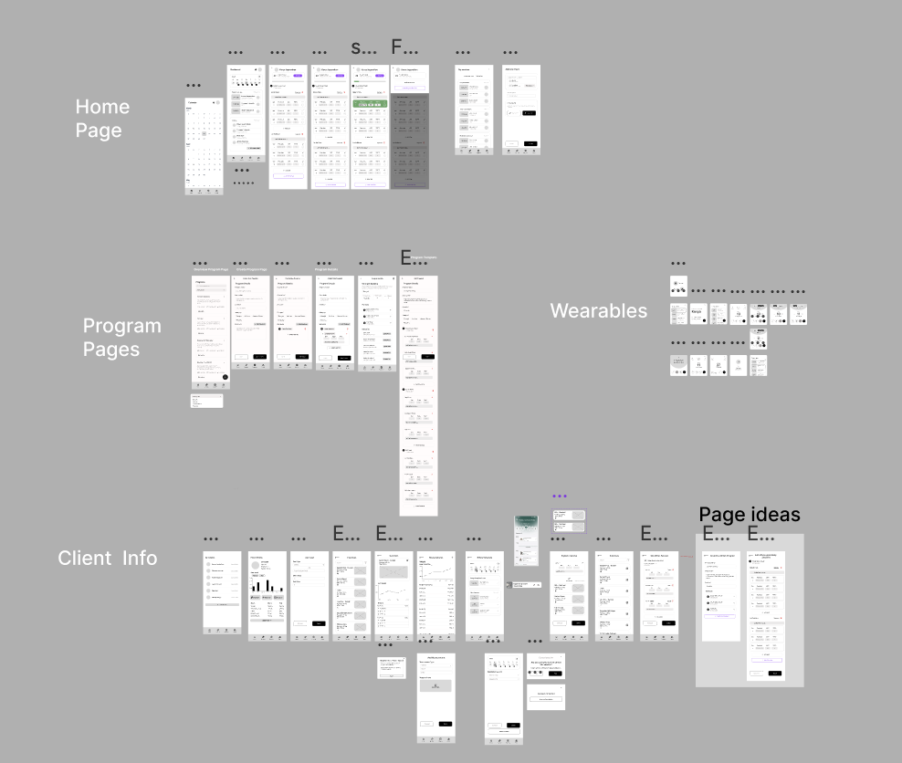
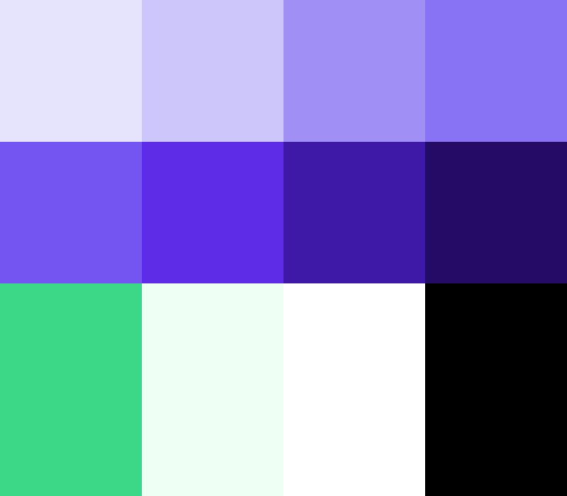
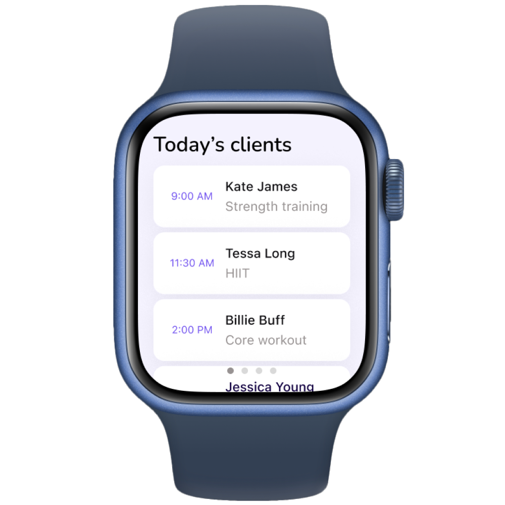
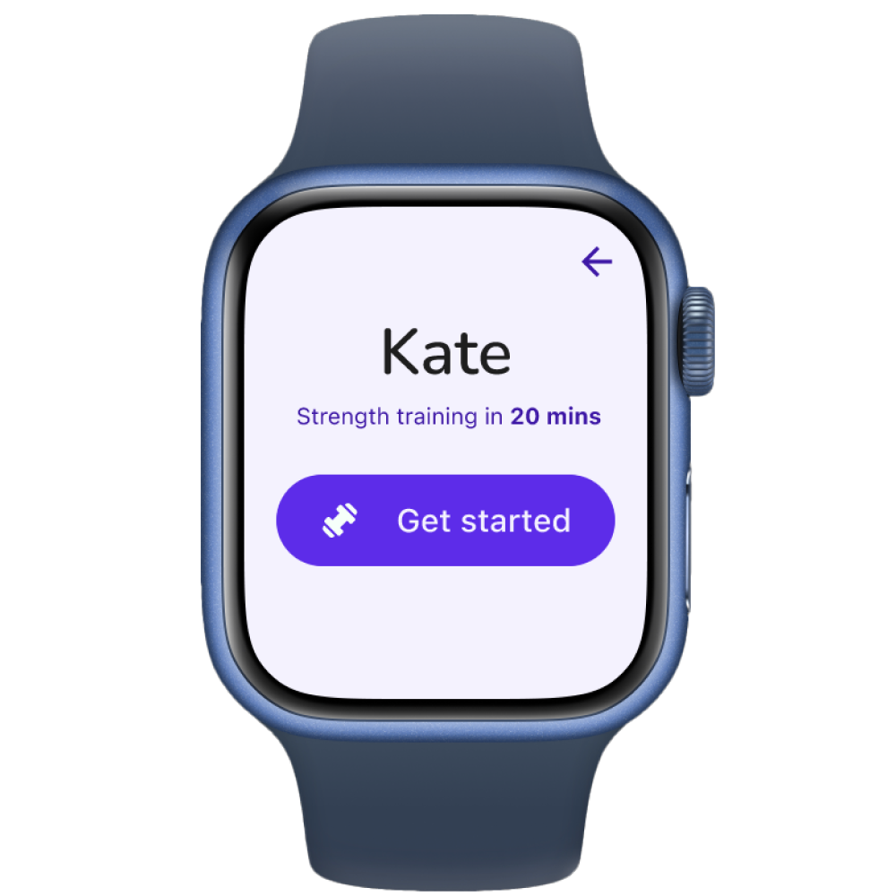
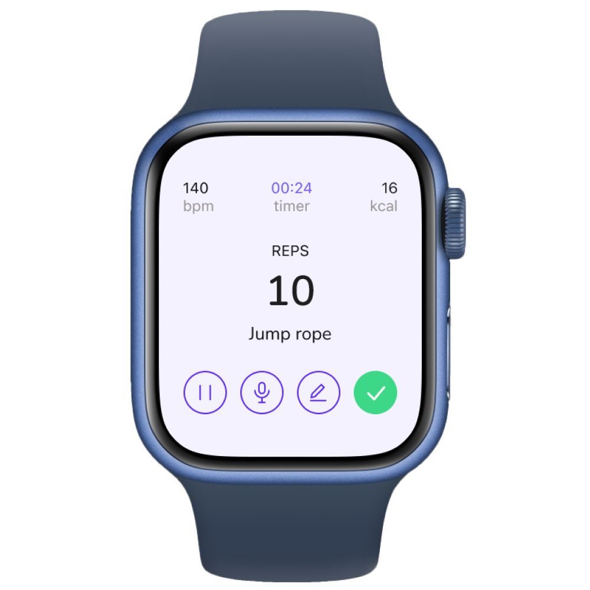

CAMILA

GARCIA
Case Study · Product Design
Designing a dual-platform mobile and wearable experience that helps personal trainers capture session data in real time, without losing the human connection that keeps clients coming back.

Personal trainers who manage four or more active clients constantly face the same impossible choice: look at their phone and log data accurately, or stay present and actually coach.
Most existing tools were built for planning and post-session review, not for the floor. So trainers delayed their notes, relied on memory after long days, and watched the accuracy of their data quietly erode.
We built Spotter — a mobile and wearable system that captures session data in real time without pulling trainers out of the moment. A tap on the watch logs the set. The phone handles the rest.

Research
We ran semi-structured interviews with personal trainers spanning 1 to 13 years of experience.
The goal was to understand how documentation happens today, what breaks during live sessions, and how trainers decide what is worth tracking.
01
Empathize
02
Define
03
Ideate
Sometimes I have to ask a client to remember the weight they lifted while we were together to retroactively input data.
Personal trainer, interview participantThe more you put into an app, the more bogged down it will be.
Personal trainer, interview participantTransferring data from my phone to laptop is annoying and during busy weeks I fall behind on this.
Personal trainer, interview participantThe more data you have, the more paralysis analysis comes in.
Personal trainer, interview participantI want to be very engaged with them even during their sets, but when I know they got it down I make notes so I don't forget it then and there and that's when I get distracted.
Personal trainer, interview participantYou have to be ready to adapt to the client's needs in the moment.
Personal trainer, interview participantFinding 01
Finding 02
Finding 03
Insight 01
Insight 02
Insight 03
Design Process
We translated the strongest sketch directions into low fidelity wireframes — a 26 screen mobile prototype and a 15 screen wearable prototype. The wireframes helped us validate structure first, without the distraction of color or typography.

We conducted moderated think-aloud tests with five participants using low fidelity prototypes across both mobile and wearable. Participants completed tasks like accessing daily sessions, editing client information, customizing programs, and logging actions on the wearable during a simulated training moment. The biggest issues centered on navigation consistency, unclear affordances on cards, and confusion between similar actions. We addressed these through clearer labels, stronger visual cues, and more consistent paths.
Problem 01
Solution 01
Problem 02
Solution 02
Identity

We designed Spotter as a mobile hub + low-attention wearable pairing. On the floor, trainers tap the watch to mark sets, adjust loads, and capture quick voice notes without breaking eye contact.
Off the floor, the mobile app organizes programs, sessions, and client history. A post-session summary reinforces trainee accountability and surfaces patterns over time.
Our color palette
Fun team color ideation!
Screens
The wearable interface strips the experience down to its essentials. One tap to log, one tap to move on. Large tap targets, minimal text, voice fallback for everything that needs more detail.

01 — Launch

02 — Today's clients

03 — Pre-session

04 — Live logging
While the wearable handles the moment, the mobile app handles everything around it — client profiles, session programs, historical trends, and post-session summaries that write themselves.
I took the Home and Session flows from initial wireframes through final implementation. I was also a key contributor to the final visual design system, helping design all mobile screens and wearable interfaces to create a cohesive cross-device experience.
Navigate the full mobile flow from home to session to post-session summary.
Click through the Apple Watch flow: log sets, move between clients, capture notes.
Reflection
Designing for trainers means designing for attention. The product succeeds only if it protects presence during the session — you can't just make something fast, you have to make something that doesn't ask for attention at the wrong moment.
Progressive disclosure works best when it starts from a clear definition of minimum useful data — not from a list of possible metrics. That framing changed how I think about every feature prioritization decision.
Navigation clarity depends on naming and structure. Small mismatches in labels can create big confusion when actions look similar.
Validate Spotter in real gym environments with working trainers and live clients.
Refine wearable interactions for faster use, like haptic patterns, clearer data entry labels.
Explore integrations with calendars, messaging platforms, and fitness data services.
Camila Garcia 2026